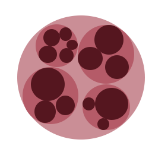
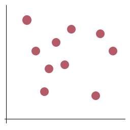
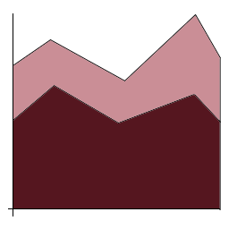
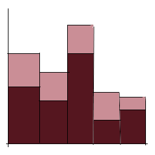
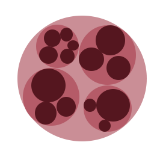
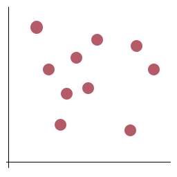
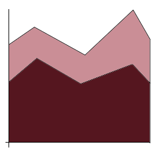
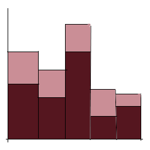

About
Overview
This is a simple website demonstrating different basic visualizations and discussing their advantages and best use cases. Each type of visualization is analyzed. The type of data it is useful for, the marks and channels it uses, and some important considerations when using the visualization are all discussed. Each visualization also has some links to further resources as well as links to related visualizations, if applicable. By using this site, one should be able to further understand the type of visualization presented, as well as be able to identify its pros and cons, allowing them to be able to identify which type of visualization is best suited for their data.
How to Use
To use this site, simply click on the icons above to view the visualization represented. This will bring the user to a page giving an example of the visualization as well as a discussion of its advantages, disadvantages, example use case, as well as possibly tips or considerations. To return to the main page, simply click the "Home" link at the top of the page. It should be noted that all data used to create the sample visualizations is fake.
Development Process
Each visualization is made using D3. To create this website, I first focused on the base visualization, taking code provided in class and through the D3 textbook. I then created fake data to use for each of the visualizations. After I had data as well as the base part of the visualizations, I focused on styling the visualization as well as adding labels for axis, titles, and legends. The legends were made using Susie Lu's d3.svg.legend package. While creating the visualizations, I also worked on analyzing them. Finally, I worked on creating the icons seen on the main page, as well as fixing the CSS styling of the website as a whole.
When writing the descriptions for the visualizations, I referenced several sites. In particular, it was interesting learning about the origin of the candlestick chart.
References
Datasets are all random fake data I generated myself.
The base of these visualizations come from the code provided in class by the professor Steven Yi and through the textbook Interactive Data Visualization for the Web, 2nd edition. Scott Murray. O’Reilly, August 26, 2017.
Lengends are created using Susie Lu's d3.svg.legend package.
W3 Schools was used in reference for CSS styling.
Color Brewer 2.0 was used to select some color schemes.
Further references for individual visualizations can be found on their respective pages.